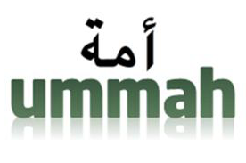
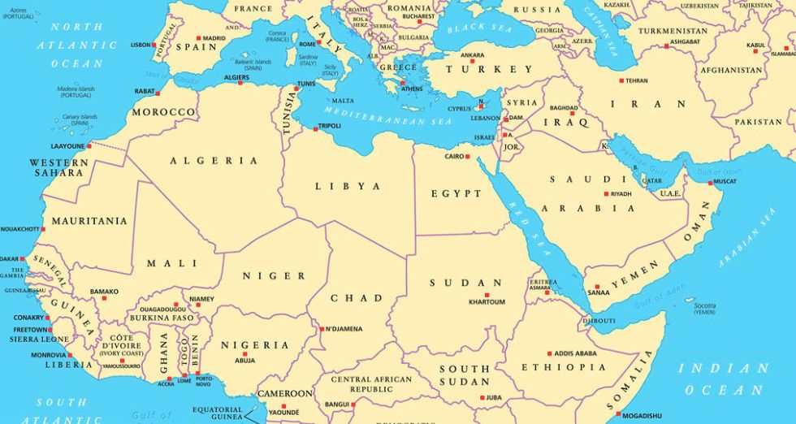
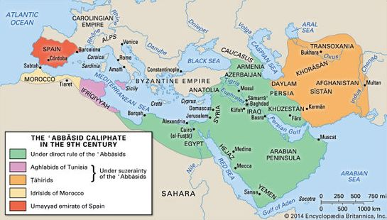
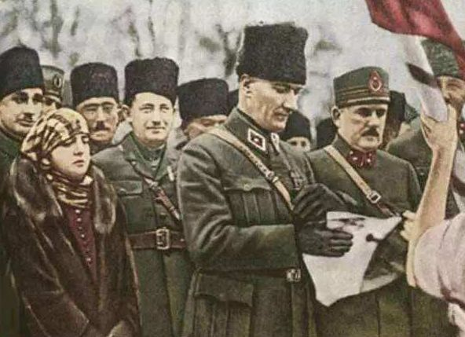
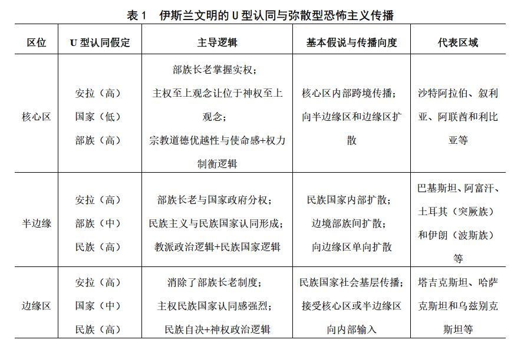
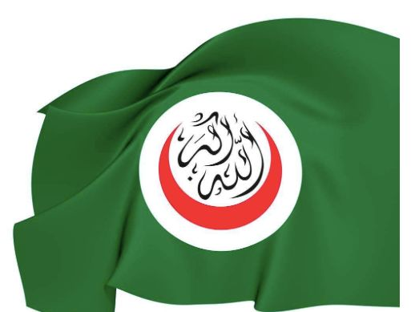

收录于合集
简
姜鹏
外交学院国际关系研究所博士后、哈尔滨工程大学形势与政策研究中心副教授
摘要
本文对弥散型恐怖主义生成根源、传播路径与扩散范围却没有形成系统性的区分与探讨。基于对伊斯兰文明圈核心区域、半边缘区域和边缘区域在宗教地位、部族影响、民族国家认同与区域权力结构四种因素的区分，在伊斯兰文明核心区域容易形成向外围单向辐射的跨国弥散型恐怖主义；而在伊斯兰文明边缘区域容易接受来自文明核心区域的影响并成为伊斯兰极端主义扩张工具与动员手段。半边缘区域因地缘上的过渡性和宗教上的亚文明特征而介于两者之间。
关键词
恐怖主义 伊斯兰极端主义 国际反恐
弥散型恐怖主义之理论建构：假定、逻辑与基本假说
19世纪70年代产生的第四次恐怖主义（也被称为“宗教恐怖主义”）浪潮使得跨国恐怖主义成为超越国家主义研究范式的非传统安全领域面临的重要课题。 如果说文化与信仰要素造就了纷繁复杂的伊斯兰世界所蕴含的多元政治忠诚，并构成了如 “ 基地 ” 组织政治命运式的 “ 一失败，即扩散 ” 的弥散型恐怖主义生成的文化常量，那么伊斯兰世界内部权力结构的稳定性要素则构成了弥散型恐怖主义在其历史上反复出现并且不断超越部族、种族、国家、政党与教派的核心自变量 。
1.前提假定：多元忠诚的伊斯兰社会与U型认同曲线
在安拉、国家与部族三者权威之间，伊斯兰文明核心区域 —— 西亚北非阿拉伯地区 —— 的宗教与政治忠诚往往呈现出两边高而中间低的 U 型认同曲线 。 由于在伊斯兰文明的历史演进中没有经历过类似于文艺复兴与启蒙运动这种“全民对上帝是否存在的反思和对人性价值的重申”，所以同宣扬主权至上的西方化了的外部世界不同，整个乌玛世界从根本上讲仍然是一个将神权至上奉为最高价值理性的社会。

乌玛
自伊斯兰教在公元7世纪产生已降，传统伊斯兰世界的宗教与政治认同便一直围绕着“真主”安拉以及自先知穆罕默德在公元632年去世后能够对伊斯兰宗教与法律教义享有解释权的教派首领。一方面，对安拉的信仰忠诚建构了伊斯兰世界内部的宗教团结，以至于“在传统穆斯林社会的身份认知中将世界划分为Dar al-Islam和Dar al- Harb，即已经归顺真主的安享和平区域和尚未归顺真主的战争地区”。例如，在“伊斯兰国”的叙事架构中，就将乌玛世界和乌玛以外的卡菲尔（Kufr）进行了明确的身份区分。2014年7月1日，刚刚建立“伊斯兰国”的哈里发巴格达迪在布道演说中明确表示：“当今的世界已经被划分成两个阵营，一个阵营是伊斯兰教徒，另一个是卡菲尔阵营。伊斯兰教徒阵营由全世界的穆斯林和穆贾西丁组成，异教徒阵营则由犹太人、十字军等卡菲尔国家组成。”另一方面，对教派忠诚基础上的部族认同则构建了伊斯兰世界内部长期的权力斗争。不论这些部族领袖们是来自那些只认可阿里与侯赛因等穆罕默德家族后裔的什叶派伊玛目（imam），还是承认穆罕默德去世后四大哈里发均是继承者演化出的逊尼派部族领袖，这些担负普通穆斯林信仰“领拜人”角色的部族长老们掌控了诸如欧洲中世纪各个教区红衣主教们所拥有的信仰与政治双重权力，从而成为了普通而虔诚的穆斯林与真主之间信仰沟通的唯一渠道与效忠对象。时至今日，在伊斯兰文明的核心地区——西亚北非阿拉伯地区——不论是政教合一的沙特阿拉伯、伊朗或阿拉伯联合酋长国，还是在世俗主义政权控制下的利比亚、伊拉克或叙利亚，在斯芬克斯之谜一样的伊斯兰世界权力角逐背后仍然能够清晰地发现部族力量这一基本政治单元发挥的核心作用。

而主权国家作为一个西方国际政治晚近才出现的概念，从未在《古兰经》中像“真主至上”（Allahu Akbar）、“塔维德”（Tawheed）或“伟大的先知”一样成为价值追求的重要目标。伊拉克哈希姆王朝首任国王费萨尔一世曾对国内长期存在的部族主义对抗国家主义政治生态一直十分头疼，并早在1933年便发现了在伊斯兰世界内部部落主义对国家认同的消极影响：“由西方制图家和政客们随手勾画出来的伊拉克就像是一个汇聚了各类民众的调色板。这里充斥着缺乏任何爱国情怀的真正的乌合之众。脑子里浸透的不是各类诡异的宗教传说，就是被从小灌输的部族仇恨。在这个国家里，他们没有共同的联系，只会一味地屈服于邪恶势力和专制统治，并且随时准备推翻一切现存政权。”如今的伊拉克仍然是什叶派、逊尼派和库尔德三足鼎立的政治局面。国家边界的划分让这个伊拉克难以在脱离“家长制”的强人统治下保持长期政治稳定。一俟维系国家统一的压力减弱或消失，这种被政治压力粘合为一体的国家就会再次陷入到政治分裂的动荡局面并面临解体的风险。
从根本上讲，“主权至上”的西方现代国家观念同“安拉至上”的伊斯兰社会本身在逻辑上就是无法兼容的。尤其是在神权政治占主导地位的伊斯兰文明的核心区域——西亚北非阿拉伯世界——宗教派别与部族认同仍然强大的伊斯兰世界，对于主权国家的认同仍然只具有某种外来属性。因此呈现出安拉、国家与部族的U型认同态势；而在伊斯兰文明的边缘区域，由于部族长老权力在国家主导的政治变革中被强制废除，所以在经历过前社会主义国家改造过的伊斯兰文明边缘区的认同则表现为另一种U型曲线，即以安拉和民族国家的忠诚为两个顶点，而对部族认同与忠诚为低点的特殊形式。
2.逻辑脉络：身份认知理论推演下的伊斯兰政治法则
本项研究以伊斯兰世界内部存在着的差异性U型认同曲线为核心假定与逻辑起点，在此基础上推演出的逻辑链条可以简单概括为：独特的伊斯兰文化孕育下的身份认知决定了内部成员的利益认知，利益认知决定了伊斯兰世界内部成员间互动逻辑与理性偏好，进而对行为选择模式产生影响，最终造就出差异性的伊斯兰地区政治法则。
伊斯兰文明核心区域——西亚北非的阿拉伯地区——独有的U型身份认知曲线决定了成员在“建立统一的伊斯兰世界”和“基于部族身份的教派忠诚”两种身份之间进行利益判断。 一方面，共同的伊斯兰教信仰鼓励内部每一个成员在对外部文明的斗争中建立起基于宗 教– 政治信仰统一的 “ 苏丹 – 哈里发国 ” ；另一方面，伊斯兰教作为一种带有普世情怀的社会思想，使得 “ 复兴乌玛荣耀 ” 这样一种价值追求又因为阿拉伯地区内部存在的部族忠诚而始终面临着一个在其整个历史上都基本无解的逻辑困境，即在教派、部族、种族与世俗国家多元忠诚混合叠加的阿拉伯社会内部，由谁来建立起这样一个统一的政治权威？ 这一内蕴的逻辑冲突自伊斯兰教创立之日起便困扰着倭马亚王朝、阿拔斯王朝、奥斯曼王朝等所有在历史上实现统一的新月帝国并成为伴随至今的政治难题——只要伊斯兰世界内部在身份认知与价值追求上仍然无法摆脱“大信仰”与“小集团”之间内蕴的逻辑冲突，穆斯林社会的基本政治法则就会一直表现为“在传播普世信仰的民众层面自下而上的联合统一热情”与“在信奉权力制衡的大多数统治者之间——在伊斯兰文明核心区表现为部族宗教领袖，而在边缘区域则表现为民族国家领袖——自上而下的割据分裂冲动”。

阿拔斯王朝（古代中国史籍称“黑色大食”），在该王朝统治期间，中世纪的伊斯兰世界达到了极盛
绝大多数伊斯兰极端主义思想本质上是要推翻世俗政权并建立依靠沙里亚法统治的政教合一的乌玛世界。正是这种情怀在伊斯兰社会基层持续激发出的身份认同，为其在阿拉伯地区可以轻易跨越现代主权国家政治边界并广泛传播提供了最根本的条件 。 但问题在于，不论是伊斯兰文明的核心区域，还是半边缘或边缘区域，究竟是源于民众层面的自下而上的“联合统一”占据主导，还是源于统治者层面的自上而下的“割据分裂”构成主流，这取决于一个重要的认知变量——权力的结构性变化。
首先，在伊斯兰文明核心区域，当权力结构在最薄弱的国家认同环节出现真空之时，极端主义思想便很容易在 “ 大信仰 ” 所建构的身份认同基础上跨越国家边界进行传播，并向伊斯兰文明圈的其他地区外溢 。 当权力结构在伊斯兰政治的最薄弱国家认同环节出现有效的强人政治之时——例如伊拉克总统萨达姆、利比亚领袖卡扎菲、埃及总统穆巴拉克、叙利亚总统老阿萨德，或突尼斯总统本·阿里——“大信仰”便会因各阿拉伯国家世俗统治者在野心荣誉等驱使下进行的主导权竞争和权势均衡而暂时让位于“小集团”忠诚。
其次，在伊斯兰文明的边缘区域 —— 在此主要指阿拉伯地区以外的穆斯林集中分布地区 —— 例如苏联统辖过的高加索地区、中亚地区，凯末尔改革后的土耳其或中国新疆地区等经历过现代政治文明强制体验并产生持久社会结构变革的地区 —— 这类地区不仅在政治现代化过程中强制性废除了部族长老的权力，同时也使得民族自决、主权原则与建立独立国家的现代政治意识和身份认同更加清晰化 。

土耳其的现代国父穆斯塔法·凯末尔·阿塔土克（1881~1938），他推行世俗化运动，废除了政教合一的制度，使土耳其成为世俗国家，史称“凯末尔改革”
所以，在伊斯兰文明的边缘区域，存在着 “ 宗教大信仰 ” 与 “ 民族国家小集团 ” 之间的双重认同 。 由于该类地区的民族国家认同强于伊斯兰文明核心区域——西亚、北非的阿拉伯地区——同时该类地区因其在宗教内部的从属地位难以获得统一伊斯兰世界领导权的合法认同，因此，伊斯兰文明的边缘区域政治领袖层面“自上而下”的政治追求往往也限定在建立独立的民族国家或推翻现存世俗政权建立伊斯兰教法的原教旨主义国家。民众层面“自下而上”的宗教信仰认同则被民族国家认同部分淡化。例如，中亚各国在独立后彼此之间一直没有形成良性的国家关系，相互防范的政治互信水平和以邻为壑的经济合作关系在25年中不仅没有好转，反而显示出进一步恶化趋势。以上便是基于核心假定推演出的基本逻辑框架。
3.基本假说：权力结构与弥散型恐怖主义
基于本项研究的核心假定与基本逻辑可以推演出以下三种关于伊斯兰极端主义跨国传播与扩散方式的政治假说：
假说 1 ：在穆斯林社会的价值追求与身份认同层面，建立统一穆斯林世界社会是一句基于宗教信仰并能够号召与动员伊斯兰世界普通民众 “ 自下而上 ” 政治参与热情的旗帜 。 但是由于伊斯兰世界内部存在的部族忠诚、教派忠诚、民族国家忠诚以及由此产生的权威分割状态，使得不论采取何种方式统一的伊斯兰世界都难以真正建立 。 伊斯兰政治文化的重要特征就是在核心地区以部族忠诚为基本认同，而在半边缘区或边缘区域以民族国家忠诚为基本认同的权力制衡游戏。
假说 2 ：在伊斯兰文明的核心区域 —— 西亚北非地区构成的阿拉伯世界内部 —— 由于既存在广泛的宗教信仰认同，又存在深厚的部族忠诚，因此，该区域权力结构的演化对伊斯兰极端主义现象的周期性活跃起着决定性作用 。 每当伊斯兰文明核心圈内部出现权力真空之时——不论导致这种权力真空之根源来自体系内部还是区域之外——都会导致区域内伊斯兰极端主义的活跃。但是，由于在伊斯兰核心区域内存在着大量的部族、教派，以及以部族力量为核心的政权间为争夺在伊斯兰世界领导权的竞争与相互制衡，又会使得统一的阿拉伯地区权力整合无法实现。各种“自上而下”分散化权威使得阿拉伯地区统一的跨国恐怖组织无法持续做大做强。但是，这种无法在政权上做大的伊斯兰极端主义却可以向阿拉伯地区之外的穆斯林区域外溢，并在广大核心圈外的伊斯兰社会呈现出“一旦在建立政权层面失败，便会在社会层面扩散”的弥散型恐怖主义特征。
假说 3 ：在伊斯兰文明的边缘区域 —— 例如苏联时期的高加索和中亚地区，西欧殖民者统治过的印度尼西亚和马来西亚，凯末尔改革后的土耳其等 —— 由于该类穆斯林聚居区域的部族长老权威在政治现代化进程中被强制废除或消灭，因此，虽然在伊斯兰文明的边缘区域穆斯林民众中存在着 “ 自下而上 ” 的宗教认同，但却极少存在部族认同 。 边缘地区同核心地区之间不仅存在着语言、民族、种族和习惯等差异，更重要的是现代政治文明强制体验的经历——这种经历像拿破仑战争时期欧洲封建君主国遭受革命的洗礼后迎来民族国家时代一样——使伊斯兰文明边缘区域民族国家认同明显增强，并使得在该区域缺乏形成跨国恐怖主义的共同政治利益。
虽然伊斯兰极端主义往往在这些区域可以基于“大信仰”认同争取部分激进的伊斯兰原教旨主义信众并把他们转化成潜在的圣战者。但是，由于这类国家或地区处在伊斯兰文明圈的边缘——宗教与文明的从属地位注定了这类地区难以像居于文明中心的阿拉伯地区一样产生对等的文化辐射——因此与伊斯兰核心区域争夺统一伊斯兰世界的领导权不同，这种被现代民族国家政治理念深刻影响的地区甚至并不谋求在平等的相邻民族间建立跨区域的多民族国家，而是往往谋求建立带有政治自治色彩的独立民族国家或推翻现存世俗政权建立沙利亚法统治的原教旨主义民族国家。因此，边缘地区本身往往自身不会形成强大的向周边辐射的弥散型恐怖主义，更多的是面临由核心区的“输入型”恐怖主义。

表1 伊斯兰文明的U型认同与弥散型恐怖主义传播（ 资料来源：作者总结自制）
案例分析
全球伊斯兰会议组织一共包含了57个主权国家和2个地区（西撒哈拉和科索沃）。其中，阿拉伯国家联盟成员共有22个，非阿拉伯地区的伊斯兰国家为37个。通过对美国国务院官方网站2015年最新公布的46个“境外”恐怖组织名单分析可以发现：在综合影响力排名前十位的伊斯兰极端组织中，出现在伊斯兰文明核心区域的7个，伊斯兰文明半边缘或边缘区域的3个。同时，谋求在全球或区域建立统一伊斯兰社会的恐怖组织共有6个，其中5个在阿拉伯地区，1个出现在伊斯兰文明边缘的阿富汗地区。这意味着在伊斯兰文明核心区域具有更大的伊斯兰极端主义发展的动能，而在伊斯兰文明的半边缘或边缘区域则更倾向于谋求民族国家独立或原教旨主义者与世俗政权之间关于国家政体选择的权力内斗。

伊斯兰会议组织
为进一步检验理论的基本假说，本项研究将选取发端于阿拉伯地区的恐怖组织 “ 伊拉克与沙姆伊斯兰国 ”（“伊斯兰国”） 、发端于伊斯兰文明圈 “ 半边缘 – 边缘 ” 地带的阿富汗塔利班组织（阿塔）与巴基斯坦塔利班组织（巴塔）作为实证检验案例，同时也选取 “ 基地 ” 组织和库尔德工人党作为证伪案例对上述假说进行检验 。
前面的两个案例主要选取了在伊斯兰文明核心区域谋求在全球伊斯兰社会影响力的”伊斯兰国”以及在伊斯兰文明半边缘区域阿富汗和巴基斯坦谋求建立沙利亚法治下的主权国家的塔利班组织。 上述两个具有代表性的样本既包含了伊斯兰文明的核心区域的恐怖组织，也包含了伊斯兰文明核心圈以外区域的恐怖组织 。
选择半边缘区域的“阿塔”与“巴塔”的原因有两点：第一，与处于伊斯兰文明核心区域的阿拉伯地区恐怖组织不同，阿富汗与巴基斯坦地区处于伊斯兰文明核心区之外。第二，同纯粹的边缘区不同，阿富汗与巴基斯坦地区都保留着强大的部族长老权威的影响 。 鉴于论据在论证过程中本身存在的等级性，如果尚保存部族长老制的半边缘区域都对建立民族国家具有强烈的动机，那么经历过更深刻现代政治影响且没有部族长老制的边缘区对独立民族国家的诉求会更加强烈。
同时， 选择 “ 基地 ” 组织作为证伪案例的原因在于：一方面， “ 基地 ” 组织发端于伊斯兰文明核心圈以外的阿富汗地区，为何却在全球伊斯兰极端组织中具备极强的输出能力？库尔德工人党诞生于伊斯兰文明的核心区域，却为何又对建立独立民族国家情有独钟？ 如果看似与本项研究所提出假设背离的逆向案例也能在证伪层面符合理论的解释边界，这样的理论才更具逻辑的合理性和基本的前瞻性。
结论
第一，出现在伊斯兰文明核心区域 —— 西亚北非的阿拉伯地区 —— 的 U 型认同曲线基本在安拉、国家与部族三者之间进行排布 。 由于国家认同明显低于宗教认同和部族认同，因此，一旦该核心地区出现权力真空，伊斯兰极端主义思想便可以在同一教派的部族间很轻易地穿透主权国家的政治边界形成弥散型恐怖主义态势。一旦这种癌细胞式的扩散趋势没有得到有效控制，便会形成以教派和部族武装为基础的跨国恐怖组织集团，并凭借阿拉伯地区在伊斯兰文明中的核心地位向外部单向度外溢。
第二，阿拉伯地区的政治文化鼓励权力制衡，这从根本上预示着来自核心区统一伊斯兰世界的政治诉求难以真正实现 。 “由谁掌控统一后阿拉伯地区垄断性权威”的现实问题将使得伊斯兰世界中任何一个潜在的霸权者遭到所有其他部落国家的联合制衡。在伊斯兰文明核心圈的阿拉伯地区，不论是以国家形态出现的“酋长国家”，还是以恐怖集团出现的“部族武装”，一旦其统一伊斯兰世界的政治宗教野心被区域内其他统治者察觉，便会自动形成遏制其壮大的政治军事联盟。需要注意的是，这种联合遏制很难彻底根除伊斯兰极端主义恐怖集团在社会民众层面的影响，而更可能会出现像阿富汗战争后“基地”组织的命运一样的扩散态势，即“一旦在政权层面出现失败，便会在社会层面大范围扩散”的弥散型恐怖主义与长期混乱。
第三，在伊斯兰文明圈的核心区域之外 —— 泛指阿拉伯地区之外的伊斯兰国家 —— 的极端组织因其在宗教信仰文明圈中的从属地位，以及经历过现代民族主义政治文化的影响，往往并不热衷于追求在全世界伊斯兰统一运动中承担领导角色，而是更热衷于追求建立民族自治色彩的现代主权国家或推翻现存政权建立原教旨主义伊斯兰教法国家 。 由于伊斯兰文明边缘区的国家很多经历过强制废除部族酋长权威——如苏联时期的中亚和高加索地区、东南亚穆斯林国家或凯末尔革命后的土耳其——的社会结构变革和现代政治的强制体验经历，因此，废除部族酋长的伊斯兰文明边缘区的认同则明显呈现出安拉、国家与民族排列的U型认同曲线。尤其是当民族与国家构成全新的“民族国家”认同之时，边缘区的民族国家形成的认知边界往往使得跨国恐怖组织难以形成超国家的弥散型扩散态势。（篇幅有限，文章有删改，具体的案例分析及注释详看原文。）
文章来源：《国际安全研究》2018年01期
筛选：ササ 编辑：ササ 里仝
轻点下方广告支持我们
我们将更好地为您呈现精彩内容！